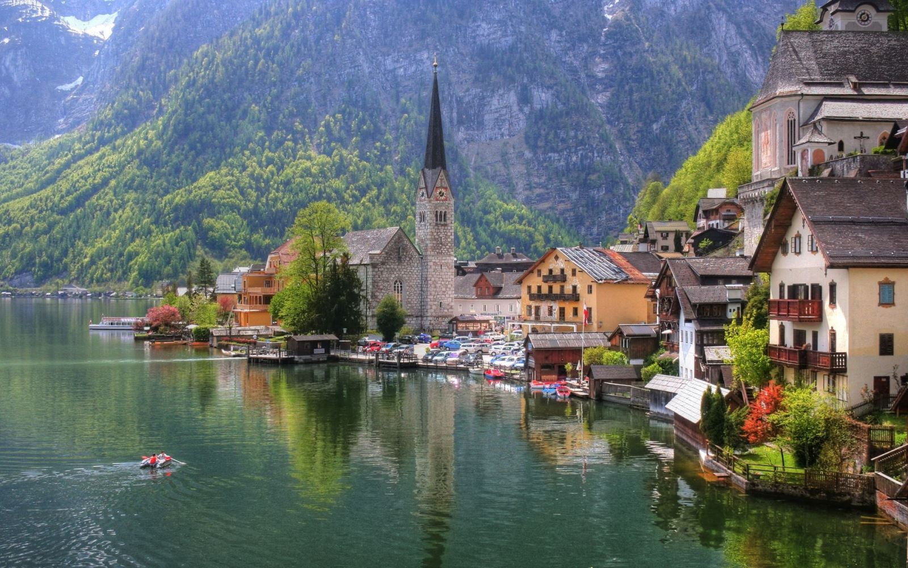

We Build Careers

تحصیل در اتریش
شرایط ورود به دانشگاه های اتریش:
برای کسانی که در حال حاضر مشغول به تحصیل در دانشگاه های آزاد و سراسری هستند و فارغ التحصیل نشده اند یکی از بهترین فرصت های تحصیلی ، اخذ انتقالی از دانشگاه خود به یکی از دانشگاه های کشور اتریش می باشد. به عبارت دیگر اگر شخصی دیپلمه باشد، یعنی ۱۲ سال تحصیل کامل داشته باشد نمیتواند مستقیما برای دانشگاه های اتریش اقدام نماید، بلکه باید قبولی در کنور دانشگاه را داشته باشد تا بتواند برای کالج اقدام کند. و کالج در اتریش تقریبا دو ترم است و کالج ها فقط به زبان آلمانی میباشد.
برای این منظور داوطلب می بایستی دانشجوی رشته مورد نظر در دانشگاه کشور خود و یا کشور دیگری که مورد تائید است باشد، در واقع پیش شرط درخواست پذیرش جهت دانشگاه های اتریش قبولی در کنکور دانشگاه (سراسری یا آزاد ) در رشته و مقطع مورد نظر است.
برای این منظور با اخذ گواهی اشتغال به تحصیل از دانشگاه خود به همراه ریزنمرات تایید شده و گواهی عدم منع تحصیلی در دانشگاه خود به همراه سایر مدارک مورد نیاز، پرونده شما جهت اخذ پذیرش و ادامه تحصیل در دانشگاه های معتبر وین و سایر شهرهای اتریش بازگشایی می شود، لازم به توضیح است در این روش واحدهایی که شما در دانشگاه اولیه خود گذرانده اید مورد ارزیابی قرار می گیرد و نیاز به گذراندن مجدد این واحد ها در دانشگاه مقصد نمی باشد.
در اتریش حدود ۱۸ دانشگاه و ۱۱۰ مرکز آموزشی وجود دارد که زبان ملی و تدریس آلمانی می باشد البته در دوره دکتری و در بعضی دانشگاه های خصوصی می توان به زبان انگلیسی تحصیل کرد. بهترین دانشگاه آن دانشگاه وین دارای رتبه ۸۴ در جهان و رتبه ۱۵ در اروپا می باشد.
نکته : برای اخذ پذیرش برای دانشجویان خارجی نیاز به مدرک زبان آلمانی نمی باشد و دانشجو می تواند پس از اخذ پذیرش در کشور مربوطه دوره های زبان را طی کند. برای افرادی که آشنایی به زبان آلمانی ندارند سه ترم نیاز است که دوره زبان بگذرانند. هزینه دوره زبان برای هر ترم ۳۸۰ یورو میباشد.
اتریش مهد موسیقی و معماری در دنیا بوده و دانشجویان فارغ التحصیل مخصوصا در این رشته ها دارای امتیاز بالایی در کل دنیا جهت ادامه تحصیل و کار می باشند. و هزینه های تحصیل در این دانشگاه ها در تمامی مقاطع و درتمام رشته ها تک نرخی و تقریبا رایگان می باشد.
شهریه هر ترم ۳۸۰ یورو ( نصف شهریه دانشگاه آزاد در مقطع لیسانس و یک چهارم شهریه دانشگاه آزاد در مقطع فوق لیسانس) می باشد، که با شرایط معدلی مختلف بیشتر این مبلغ نیز به دانشجو مسترد می گردد .
نکته : بعضی از دانشگاه ها مانند گراتس این شهریه را در صورتی که دانشجوی ایرانی حداقل ۹ واحد در ترم گذرانده باشد به صورت کامل برمی گرداند.
نکته ها:
اگر شخصی در ایران لیسانس دانشگاه آزاد باشد نمی تواند برای فوق لیسانس نا پیوسته اقدام کند بلکه باید برای مقطع فوق لیسانس پیوسته درخواست دهند و بعد از ورود به دانشگاه درخواست ارزشیابی مدارک تحصیلی خود را دهد که آنجا معلوم می شود از کدام ترم لیسانس می تواند تحصیلات خود را شروع کند و پیوسته تا فوق لیسانس ادامه دهد
لیسانسیه های دانشگاه های دولتی میتوانند برای فوق لیسانس اقدام کنند اما این باز هم بستگی به خود دانشگاه در اتریش دارد زیرا سطح تحصیل اتریش نسبت به ایران یک سال جلو تر است و شاید بعضی از واحد های آنها را بپذیرند و یک سال پایین تر بنشیند و بعد می تواند ادامه تحصیل دهد .
بطور کلی باید مدارک تحصیلی به اتریش فرستاده شود و خود دانشگاه با توجه به ریز نمرات متقاضی تعیین کند که شخص از چه ترمی در اتریش می تواند شروع به ادامه تحصیل نماید
برای دکترا در اتریش خیلی سخت می توان اقدام کرد زیرا باید در اتریش استاد راهنما پیدا شود و معمولا این امر با موفقیت امکان پذیر. به دانشجویان متقاضی دوره دکترا پیشنهاد شود که حتماٌ اول دوره فوق لیسانس بگذرانند و بعد برای دکترا اقدام کنند.
در اتریش برای ورود به دانشگاه ها متقاضیان باید به زبان آلمانی آشنایی داشته باشند
مهلت ثبت نام:
برای دوره سپتامبر: مهلت ارائه مدارک اول ژانویه
برای ورودی فوریه: مهلت ارائه مدارک اول آگوست
هزینه های اقامت و زندگی در اتریش:
– هزینه اقامت در پانسیون با اتاق مستقل با امکانات متفاوت در حدود ۱۸۰ تا ۳۰۰ یورو می باشد .
– هزینه خوراک کاملا بستگی به فرد دارد و در حدود ۲۰۰ تا ۳۵۰ یورو در ماه قابل پیش بینی است .
– دانشجو به صورت پاره وقت دارای اجازه کار می باشد .
ما با حضور خود در این منطقه در زمینه اخذ و پذیرش و اعزام دانشجو به دانشگاههای اتریش آماده خدمتگزاری به جوانان و دوستان علاقمند به تحصیل و کسب درجات عالیه علمی در این کشور اروپایی می باشیم .
مدارک لازم:
مدارک زیر با توجه به شرایط تحصیلی مورد نیاز است:
ترجمه رسمی مدرک دیپلم و ریز نمرات دیپلم
ترجمه رسمی مدرک پیش دانشگاهی و ریز نمرات پیش دانشگاهی
ترجمه رسمی مدرک لیسانس و ریز نمرات لیسانس
ترجمه رسمی کارت ملی و شناسنامه
ترجمه رسمی کارت پایان خدمت ویژه آقایان
اسکن و کپی صفحه اول پاسپورت و صفحاتی که دارای مهر است
نامه قبولی در کنکور
گواهی اشتغال به تحصیل در رشته مربوطه از دانشگاه
۱۲ قطعه عکس رسمی پاسپورتی
لازم به ذکر است که ترجمه مدارک تحصیلی باید به تایید سفارت اتریش برسد.
نحوه اخذ ویزا و مدارک لازم برای سفارت:
در خواست ویزا باید شخصا ارائه شود. سفارت در صورت ناقص بودن مدارک از قبول درخواست روادید امتناع خواهد کرد. بررسی مدارک توسط سفارت معمولا ۲ تا ۳ ماه طول میکشد.
سه نسخه فرم درخواست ویزا که میتوانید از سفارت تحویل بگیرید.
۳ قطعه عکس جدید
گذرنامه با مدت اعتبار حداقل ۶ماه + ۲ سری کپی
شناسنامه + ۲سری کپی
گذرنامه و شناسنامه همسر + ۲سری کپی
گواهی عدم سوء پیشینه + ۲سری کپی
اصل و ۲سری کپی از پذیرش تحصیلی
اصل و ۲سری کپی از مدارک تحصیلی دبیرستان و پیش دانشگاهی
اصل یا کپی ترجمه مدارک تحصیلی با تایید سفارت اتریش
تعهد نامه مالی که مبلغ ۷۰۰۰یورو در حساب خود باید داشته باشید
آیا دانشجویان در اتریش ملزم به داشتن بیمه درمانی هستند؟
از اقدامات بسیار ضروری پس از ورود به کشور گرفتن بیمه دانشجویی است که با برگه ثبت نام دانشگاه به راحتی ممکن می باشد. این بیمه در حدود ماهیانه ۲۳ یورو برای دانشجویان است و شماره بیمه نامه فرد برای تمدید ویزا یا سایر کارهای اداری الزامی است.
آیا دانشگاههای اتریش امکانات خوابگاهی (Dorm) در اختیار دانشجویان خارجی قرار می دهند؟
امکانات خوابگاهی معمولا ارتباطی به دانشگاه ندارند ولی مرسوم ترین محل سکونت برای دانشجویان هستند. در تمام شهرهای اتریش خوابگاه های دانشجویی بسیاری وجود دارد که امکانات خوبی را با قیمت خوبی در اختیار دانشجویان قرار می دهند. هزینه این خوابگاه ها معمولا بین ۱۸۰ یورو تا ۳۰۰ یورو در ماه است.
نرخ معمول اجاره خانه در اتریش چه قدر است؟
این نرخ کاملن به شهر و منطقه مورد نظر وابسته است. به طور متوسط در وین این نرخ متناسب با متراژ خانه و به ازای هر ۱۰ متر مربع ۱۰۰ یورو است. به این معنا که آپارتمانی با متراژ ۴۰ متر مربع اجاره ای برابر با ۴۰۰ یورو در ماه خواهد داشت. این مبلغ کاملن خالص و بدون محاسبه شارژ آپارتمان, برق و گاز است. معمولا این مبلغ تا ۱۰۰ یورو , همچنان بدون محاسبه برق و گاز, محل افزایش دارد.
آیا دانشجویان خارجی در اتریش اجازه کار کردن و کسب درآمد در حین تحصیل را دارند؟
شخصی که با ویزای دانشجویی در کشور اقامت دارد, اجازه کار در کشور اتریش را ندارد . به شرط درخواست کارفرما یا برای کارآموزی میتوان اجازه کار موقت یا نیمه وقت تا سقف حدودا ۳۴۰ یورو در ماه دربافت کرد.
من متأهل هستم. امکانش هست همسرم را همراه خود بیاورم؟
شخصی که پذیرش از دانشگاه را دریافت کرده و برای ویزا اقدام می کند همزمان می تواند برای همسرش نیز درخواست ویزا دهد و همزمان به کشور اتریش وارد شوند.
آیا همسرم میتواند در اتریش به کار مشغول شود؟ یا تحصیلاتش را ادامه دهد؟
همسر دانشجویانی که با ویزای دانشجویی وارد کشور اتریش شده اند, همانند همسرشان مجاز به کار در این کشور نیستند. اما آنها نیز اجازه تحصیل دارند و برای گرفتن پذیرش نیازی به گواهی اشتغال تحصیل از کشور مبدا ندارند.
زبان تدریس دانشگاههای اتریش چیست؟ آیا برای پذیرش باید امتحان زیان بدهم؟
زبان رسمی تدریس تا مقطع کارشناسی ارشد آلمانی است . سطح دانش زبان دانشجویان به وسیله آزمونی به نام EPD ارزیابی می شود که در ایران برگزار نمی شود. با در دست نداشتن نتیجه آزمون EPD به دانشجو پذیرش غیر رسمی داده می شود. این پذیرش به منزله پذیرش کامل است ولی مشروط به گذراندن آزمون. به دانشجو دو سال فرصت داده می شود تا در کشور اتریش به تحصیل زبان و انجام آزمون بپردازد ( هر متقاضی فقط تا ۳ بار مجاز به شرکت در آزمون زبان EPD می باشد و پس از آن در صورت قبول نشدن پذیرش وی باطل می گردد) و پس از آن پذیرش جدیدی با عنوان دانشجوی رسمی دریافت می کند و مجاز به تحصیل در دانشگاه می شود. در شرایطی که دانشجو در ایران دوره زبان آلمانی را گذرانده باشد پس از ورود به کشور فقط در آزمون شرکت می کند و مدرک را به دانشگاه ارائه می کند و ملزم به گذراندن دوره زبان نمی باشد. در بعضی دانشگاه ها هنگام ثبت نام مصاحبه شفاهی از دانشجو انجام می شود که به منزله قبولی در آزمون EPD می باشد. دانشگاه فنی وین از این قبیل است , در حالیکه نتیجه آزمون کتبی را نیز قبول می کند.
مدارک لازم برای تقاضای پذیرش دانشگاههای اتریش چیست؟ اهمیت هریک چقدر است؟
مهمترین مدرک گواهی قبولی جدید یا اشتغال به تحصیل در یکی از دانشگاه های دولتی ایران است. برای مقطع کارشناسی ریز نمرات دبیرستان و پیش دانشگاهی و مدرک دیپلم و پایان دوره پیش دانشگاهی و برای کارشناسی ارشد علاوه بر آن ریز نمرات دوره کارشناسی و مدرک اتمام دوره کارشناسی که پس از ترجمه و تاییدیه دادگستری به تایید سفارت اتریش در ایران رسیده باشد از مهمترین مدارک هستند. پس از آن رزومه تحصیلی و کاری فرد ترجیحا به زبان آلمانی و کپی صفحات پاسپورت الزامی می باشد. مدارک زبان و یا تاییدیه استاد یا محل کار اختیاری می باشد. نکته مهم در مورد دانشگاه های هنر و موسیقی : نکته بسیار مهم در مورد دانشگاه های هنر و موسیقی انجام آزمون عملی است . در این دانشگاه ها قبولی در آزمون عملی لازمه گرفتن پذیرش است و هیچ گونه کار عملی اعم از طراحی, نقاشی , یا سی دی و کاست های ضبط شده موسیقی مورد پذیرش دانشگاه نبوده و حضور شخص در آزمون الزامی است. از آنجایی که داشتن پذیرش از دانشگاه پیش نیاز اخذ ویزا از ایران است, تنها راه متقاضیان رشته هنر گرفتن ویزای شنگن ( به هر نحوی ) و انجام آزمون در وین است. در این صورت متقاضی با در دست داشتن پذیرش خود ملزم به بازگشت به ایران و درخواست ویزای دانشجویی از سفارت اتریش در ایران است. تبدیل ویزای شینگن به ویزای دانشجویی یا تمدید آن از داخل اتریش به هیچ وجه امکان پذیر نمی باشد. راه دیگر متقاضیان هنر قبولی در رشته غیر هنری در ایران و اخذ پذیرش از یک دانشگاه دیگر از اتریش است. پس از قبولی در آزمون, تغییر رشته برای این دسته از دانشجویان به دلیل داشتن ویزای دانشجویی از قبل از داخل کشور اتریش امکان پذیر می باشد.
هزینههای تقاضا کردن برای دانشگاههای اتریش چیست؟
دانشگاه های اتریش بر خلاف آمریکا یا دیگر دانشگاه های دیگر هزینه تقاضا ندارند. تنها هزینه های موجود برای دانشجو هزینه های ترجمه و تایید سفارت و پست مدارک می باشد.
مهلت (deadline) ارائه مدارک چیست؟
اول فوریه برای درخواستهای ترم تابستان و اول سپتامبر برای ترم زمستان. زمان آزمون عملی دانشگاه های هنر در وب سایتشان درج شده است.
بر چه مبنایی رشته تحصیلیم را باید مشخص کنم؟
رشته تحصیلی در اتریش مطابق رشته قبولی در ایران که دانشجو از آن اشتغال به تحصیل دارد می باشد با توجه به اینکه دانشجویان امکان تعویض رشته به شرط گذراندن ۸ واحد از رشته مورد نظر در یک ترم یا ۱۶ واحد در یک سال را دارند. تنها کسانی که همسر یا پدر مادرشان اقامت ( موقت , دانشجویی یا دائم ) بیش از ۵ سال در اتریش را دارند می توانند در رشته دلخواه خود مشغول به تحصیل شوند.
به طور کلی دانشگاههای اتریش را چگونه طبقه بندی میکنید؟
دانشگاه های اتریش به دو دسته دانشگاه (University ) و مدارس عالی فنی (Fachhochschule ) تقسیم می شوند که هر دو دسته مورد تائید وزارت علوم ایران می باشند. در سیستم دانشگاه شروع ترم اول(زمستان) ابتدای ماه اکتبر و شروع ترم دوم (تابستان) ابتدای ماه مارچ و پایان آن اواخر ژوئن می باشد. مدارس عالی فنی همزمان با مدارس ابتدای سپتامبر برای ترم زمستان و ابتدای فوریه برای ترم تابستان آغاز میشود و آخر ژوئن به پایان می رسند.
به چه روشهایی میتوان برای پذیرش گرفتن اقدام کرد؟
تمام مدارک باید به آلمانی ترجمه شده و به تایید سفارت اتریش در تهران برسد. سپس تمام مدارک از طریق پست به دفتر تهران ارسال شود. اکثر دانشگاه های اتریش سیستم پذیرش به طریقه آنلاین ندارند.
تفاوت بین دانشگاه ( Universität) و مدارس عالی فنی (Fachhochschule) در چیست ؟
غیر از تفاوت در شروع و پایان ترمهای دانشگاهی , در سیستم دانشگاه دانشجو مجاز به ۳ بار شرکت در زمانهای تعیین شده برای هر درس می باشد. این زمانها معمولا ۳ الی چهار بار در ترم اعلام می شوند. انجام هر امتحان بدون شرکت در کلاسها ( به شرط نداشتن کار عملی ) و در هر موقع از ترم از نظر دانشگاه بلا مانع است. در مدارس عالی فنی قبول نشدن در امتحان و نیز در امتحان جبرانی آن به معنای خواندن دوباره آن ترم به طور کامل می باشد. مدارس عالی فنی فشرده تر است و یک دانشگاه علمی کاربردی است.
از چه منابعی باید برای گرفتن اطلاعات استفاده کنم؟
وب سایت دانشگاه ها اغلب به دو زبان آلمانی و انگلیسی ارائه شده اند ولی در بخش آلمانی اطلاعات کامل تری دریافت میکنید. تجربیات دانشجویان یا فارغ التحصیل دانشگاه ها نیز بسیار مفید خواهد بود.
حجم اطلاعات وبسایت دانشگاهها بسیار زیاد است. به کدام بخش باید دقت کرد؟
معمولا در قسمت Studierende یا Students و یا قسمتی تحت عنوان Teaching, Admission می توان اطلاعات در زمینه پذیرش و رشته های مورد نظر را یافت. اغلب بعد از انتخاب زبان انگلیسی در صفحه اول وبسایت اطلاعات مرتبط با پذیرش به صورت واضحتری در دسترس قرار میگیرند.
پروسه پذیرش دادن از طرف یک دانشگاه چطور انجام میشود؟
مهمترین شرط در گرفتن پذیرش از دانشگاه های اتریش قبولی در همان رشته در یکی از دانشگاه های ایران و داشتن گواهی اشتغال به تحصیل است. این مسئله اصلی ترین شرط برای گرفتن پذیرش است. در واقع دانشگاه های اتریش قبولی در کنکور ایران را به منزله امتیاز اصلی دادن پذیرش تحصیلی می دانند و پس از آن معدل و نمرات شخص مورد بررسی قرار می گیرد. نداشتن گواهی اشتغال به تحصیل در ترم جاری در رشته مورد درخواست در ایران به منزله نگرفتن پذیرش می باشد. معمولا بین ۴ هفته تا ۶ هفته طول می کشد تا دانشگاه پس از دریافت مدارک نتیجه را با پست ارسال کنند. توجه داشته باشید که تغییر رشته تحصیلی فقط با داشتن ۵ سال بدون وقفه برگ معرفی به شهرداری (Meldezettel ) و ۵ سال بدون وقفه بیمه امکان پذیر می باشد.
در مورد رشته های هنر, قبولی در آزمون عملی ورودی نیاز است. و تا قبل از شرکت در آزمون هیچ پذیرشی ( اعم از رسمی و غیر رسمی) به دانشجو داده نمیشود. حضور فرد در آزمون الزامی است ( فرستادن نمونه کار کافی نمیباشد).تاریخ برگزاری آزمونهای عملی هر ترم در وب سایت دانشگاه اعلام میشود. برای ورود به اتریش جهت شرکت در آزمون ورودی نیاز به دعوتنامه نمی باشید. فقط کافی است برگ داوطلبان شرکت در آزمون ورودی را پر کرده برای دانشگاه ارسال نمایید. برگ تایید دانشگاه دال بر شرکت شما در آزمون ورودی که همراه با تاریخ برگذاری آزمون است برای شما حکم دعوتنامه را دارد و سفارت اتریش در ایران به انزمام این برگه به شما ویزای ورود جهت شرکت در آزمون ورودی را ابلاغ می نماید.
بعد از ورود به کشور دقیقا چه کارهایی را باید انجام دهم؟
اولین اقدام بعد از وارد شدن به کشور اتریش معرفی کردن خود به شهرداری منطقه است. برگه امضا شده توسط شهرداری (Meldezettel ) یکی از مهمترین مدارک لازم در اتریش است که طبق قانون فرد تا ۳ روز پس از ورود به کشور یا جابجایی منزل باید اطلاعات آدرس محل سکونتش را به شهرداری (Magistrat ) اعلام کند. طبق قانون پلیس مجاز است کسانی که بدون این برگه زندگی میکنند را بازداشت کند. برای ثبت آدرس محل سکونت خود در شهرداری محل, نیاز به تاییدیه محل سکونت دارید. این برگه تاییدیه یا از طرف صاحبخانه, یا مدیریت خوابگاه دانشجویی در اختیار شما قرار میگیرد. کسانی که پس از ورود به طور موقت در منزل آشنایان/دوستان زندگی میکنند نیاز به امضاء صاحبخانه و در بعضی موارد کپی قرارداد خانه دارند.
اقدام بعدی باز کردن حساب بانکی دانشجویی در یکی از شعب بانکهای مختلف اتریش است. در بانک شما را راهنمایی میکنند که چه مدارکی نیاز دارید.
سومین اقدام ثبت نام در دانشگاه است. که با در دست داشتن پذیرش، یک قطعه عکس و گذرنامه با مراجعه بین ساعات ۸:۳۰ تا ۱۲:۰۰ ظهر به (Sekreteriat ) دانشگاه صورت میگیرد. دانشجویانی که دانش زبان آلمانی کافی برای تحصیل ندارند به صورت غیر رسمی ( Ausserordentlich ) ثبت نام میکنند و نیازی به پرداخت شهریه دانشگاه ندارند. اما در همان روز قبض پرداخت شهریه کلاس زبان را از دانشگاه دریافت و به موسسه زبان موردنظر ارجاع داده میشوند. ( شهریه کلاس زبان ۳۸۰ یورو در ماه است )
تمامی قبض ها باید بوسیله حساب بانکی پرداخت شود. لذا باز کردن حساب بانکی در مراحل اولیه بسیار مهم است.
پس از ثبت نام در کلاس زبان, با در دست داشتن برگه گواهی ثبت نام کلاس زبان, گواهی ثبت نام در دانشگاه, گواهی محل سکونت و در دست داشتن کارت بانکی , دانشجو باید به اداره بیمه مرکزی مراجعه کرده و درخواست بیمه دانشجویی دهد. کارت بیمه چند هفته بعد از طریق پست به آدرس مندرج در گواهی محل سکونت فرستاده میشود.
از آنجا که معمولا دانشجویان ایرانی ویزای ۴ ماهه «مخصوص اتریش» از ایران دریافت میکنند ( ویزای نوع D که دانشجو مجاز به خروج از اتریش و ورود به محدوده شنگن نیست ) اقدام بعدی گرفتن کارت اقامت یکساله ( معتبر در تمام اروپای مشترک) است. گرفتن این کارت منوط به در دست داشتن گواهی بیمه, ثبت نام دانشگاه, ثبت نام کلاس زبان برای دانشجویان غیر رسمی , برگه محل سکونت و برگه تایید موجودی در حساب بانکی به مبلغ: برای افراد زیر ۲۴ سال ۳۸۰۰ یورو و برای بیش از ۲۴ سال ۶۸۰۰ یورو است. ( این مبلغ ممکن است سالانه اندکی تغییر کند )
در تمام مراحل بالا , تنها کارت شناسایی معتبر ,گذرنامه ایرانی دانشجو است و هیچ مدرک عکس دار دیگری اعتبار ندارد. لذا در دست داشتن گذرنامه در تمام مراحل الزامی است.
کمک هزینههای مختلف در کالجهای اتریش چگونهاند؟
در شرایط معمولی و برای مقطعی غیر از مقطع دکترا, کمک هزینه یا بورسیه هنگام پذیرش وجود ندارند. پس از ورود به دانشگاه می توان برای موسسات مختلف در خواست بورسیه داد.
آیا میتوانم هزینهی خود را با یک کار پارهوقت تامین نماییم؟
کسی که با ویزای دانشجویی در کشور اقامت دارد, اجازه کار در کشور اتریش را ندارد . به شرط درخواست کارفرما یا برای کارآموزی میتوان اجازه کار موقت یا نیمه وقت تا سقف حدودا ۳۴۰ یورو در ماه دربافت کرد.
هزینهی تحصیلات تکمیلی (graduate school) در اتریش حدوداً چقدر است؟
این هزینه بسته به نوع دانشگاه متفاوت است. ولی بیشترین مقدار شهریه ۷۸۰ یورو در ماه می باشد. این مبلغ در بعضی دانشگاه ها به شرط ارائه واحد پاس شده در هر ترم تا حدود بیش از دو سوم آن قابل برگشت است. دانشگاه فنی وین که پر متقاضی ترین دانشگاه برای ایرانیان است از این قانون مبرا است و قانون بازگشت شهریه را ندارد.
در صورتیکه متقاضی تحصیل در اتریش هستید، بر روی فرم مشاوره زیر کلیک کنید و اطلاعات خود را وارد نمایید تا از طرف موسسه با شما تماس گرفته شود (در قسمت کشور مورد نظر حتما “اتریش” را وارد نمایید)
نشانی:ساری- میدان امام-ساختمان برلیان-طبقه اول-بالای بانک تجارت،واحد شماره 19
لطفا قبل از آمدن به موسسه با کارشناسان موسسه تماس بگیرید
موسسه اعزام دانشجو کندو دکتر عزیزی
با مجوز وزارت علوم
شماره های تماس جهت تعیین وقت
011333675000
09030612326
(زمان حضور آقای دکتر عزیزی: عصر های یک شنبه،سه شنبه و پنج شنبه از ساعت 16 الی 20)
Address:
Kühlwetterstraße 8.
Room Number 0227
52072 Aachen
Germany
Contact:01573 8947230-02418025258
Business Hours:
Mon 7:00PM - 9:30AM
Wed 7:00-9:30PM
Sat 10:00AM-6:30PM
Sun 10:00 AM - 6:30 PM


کلیه حقوق مرتبط به این وبسایت متعلّق به موسسه اعزام دانشجو کندو دانش آوران سام میباشد
cds.org.ir, Copyright©2015, All Rights Reserved
Design by : BOOMHUNK